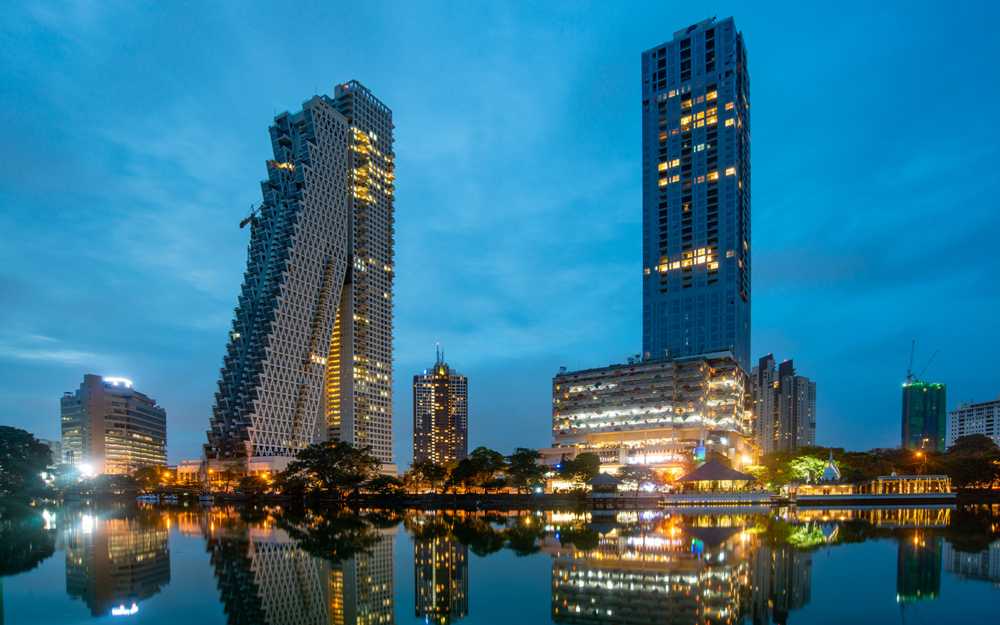

АКТУЕЛНА ПОНУДА

КОЛОМБО И ТРОПСКИОТ РАЈ
Коломбо, Шри Ланка
09.09 - 18.09
Откријте ја прекрасната Шри Ланка, остров исполнет со тропска природа, прекрасни плажи, древни храмови и богата култура. Запознајте го живописниот Коломбо, уживајте во зелените пејзажи и откријте ја уникатната атмосфера на овој тропски рај. Совршена дестинација за авантура, одмор и незаборавни искуства.
ТРОПСКА АВАНТУРА
Главниот и најголем град на Шри Ланка, познат по својата мешавина од модерна градска атмосфера, колонијално наследство и богата култура. Меѓу позначајните места се храмот Gangaramaya, Galle Face Green, Independence Square и живописниот Pettah Market. Градот нуди интересна комбинација од историја, локална култура, шопинг и крајбрежни прошетки.
Едно од најпознатите историски и природни богатства на Шри Ланка, позната по величествената карпеста тврдина Sigiriya Rock. Античкиот комплекс е опкружен со тропска природа и нуди прекрасни панорамски погледи кон околината. Местото претставува уникатна комбинација од историја, археологија и природна убавина.
Историски град во срцето на Шри Ланка, познат по своето културно и религиозно наследство. Главна знаменитост е Temple of the Sacred Tooth Relic, додека езерото Канди и централниот дел на градот се идеални за прошетка и разгледување. Градот нуди можност за запознавање со традиционалната култура, локалните продавници и автентичната атмосфера на Шри Ланка.
Познати по златниот песок, топлото море и прекрасната тропска природа. Крајбрежјето нуди идеални услови за капење, сончање, релаксација и прошетки покрај морето. Посетителите можат да уживаат и во локалните кафулиња, ресторани и прекрасните погледи кон океанот.
Живописно крајбрежно место во близина на Коломбо, познато по својата долга плажа, рибарската традиција и локалната атмосфера. Меѓу позначајните места се Negombo Beach, St. Mary's Church и локалниот пазар. Негомбо е идеално за прошетка покрај морето, уживање во локалната гастрономија и запознавање со секојдневниот живот на Шри Ланка.
Eдно од најпознатите крајбрежни места на Шри Ланка, познато по прекрасните песочни плажи, топлото море и тропската природа. Bentota Beach нуди одлични услови за капење, сончање и релаксација покрај океанот. Местото е идеално за уживање во мирната атмосфера, прошетки покрај морето и прекрасните тропски пејзажи.
Состанок со групата на аеродром во Скопје, 2 часа пред летот. Следува директен лет до Истамбул, па потоа директен лет кон Коломбо и пристигнување на аеродромот. По завршувањето на аеродромските процедури следува организиран трансфер хотелот и сместување. По сместувањето следува време за одмор и освежување. Попладнето е предвидено за прва прошетка низ околината и запознавање со локалната атмосфера. Вечерта е слободна за вечера и индивидуални активности. Ноќевање во хотел.
Појадок во хотелот и организирана прошетка низ Коломбо. Следува посета на храмот Gangaramaya, Galle Face Green и Independence Square. Потоа следува разгледување на Pettah Market и колонијалниот дел на градот. Патниците ќе имаат слободно време за кафе, ручек, шопинг и фотографирање. Во попладневните часови следува продолжување со прошетката низ градот. Вечерта е слободна за индивидуални активности. Ноќевање во хотел.
Појадок во хотелот и организирано тргнување кон Сигирија. Следува посета на познатата карпеста тврдина Sigiriya Rock, со можност за разгледување на историскиот комплекс и прекрасните панорамски погледи. Потоа следува време за фотографирање и запознавање со тропската природа околу тврдината. Предвидена е пауза за ручек и одмор. Во попладневните часови следува организирано враќање кон Коломбо. Вечерта е слободна за одмор. Ноќевање во хотел.
Појадок во хотелот и организирано тргнување кон Канди. Следува посета на Temple of the Sacred Tooth Relic и прошетка околу езерото Канди. Потоа следува разгледување на централниот дел на градот и традиционалните продавници. Патниците ќе имаат слободно време за ручек, кафе и фотографирање. Во попладневните часови следува организирано враќање кон Коломбо. Вечерта е слободна за индивидуални активности. Ноќевање во хотел.
Појадок во хотелот и организирано тргнување кон тропското крајбрежје. Следува ден посветен на одмор покрај топлото море, со време за капење, сончање и релаксација на песочните плажи. Патниците ќе имаат можност за прошетка покрај брегот, фотографирање и уживање во тропската природа. Во текот на денот е предвидено време за кафе и ручек покрај море. Попладнето продолжува со слободни активности и одмор. Во договореното време следува враќање кон хотелот. Ноќевање во хотел.
Појадок во хотелот и организирано тргнување кон Негомбо, крајбрежно место во близина на Коломбо. Следува прошетка покрај познатиот Negombo Beach и разгледување на рибарскиот дел од градот. Потоа следува посета на St. Mary's Church и локалниот пазар. Патниците ќе имаат слободно време за кафе, ручек, шопинг и фотографирање. Попладнето е предвидено за уживање покрај морето и индивидуално истражување. Во договореното време следува враќање во Коломбо. Вечерта е слободна. Ноќевање во хотел
Појадок во хотелот, по што следува слободен ден за дополнително истражување на Коломбо. Патниците ќе имаат можност за шопинг, посета на локални пазари, кафулиња и продавници. Денот може да се искористи и за дополнителна прошетка низ центарот или одмор покрај крајбрежјето. Во текот на денот е предвидено слободно време за ручек, фотографирање и индивидуални активности. Вечерта е слободна за последна прошетка и вечера. Ноќевање во хотел.
Појадок во хотелот и организирано тргнување кон Бентота. Следува посета на познатото крајбрежје и Bentota Beach, со време за капење, сончање и релаксација. Патниците ќе имаат можност да уживаат во тропската природа и да прошетаат покрај морето. Потоа следува слободно време за кафе, ручек и фотографирање. Во попладневните часови следува организирано враќање кон Коломбо. Вечерта е слободна за одмор и подготовка за заминување. Ноќевање во хотел.
Појадок во хотелот и одјавување согласно предвиденото време. По собирањето на багажот следува организиран трансфер од Коломбо до аеродромот. По пристигнувањето следува пријавување за летот и завршување на потребните аеродромски процедури. Потоа следува директен лет кон Истамбул, па директен лет кон Скопје. По пристигнувањето и преземањето на багажот завршува организираното патување.